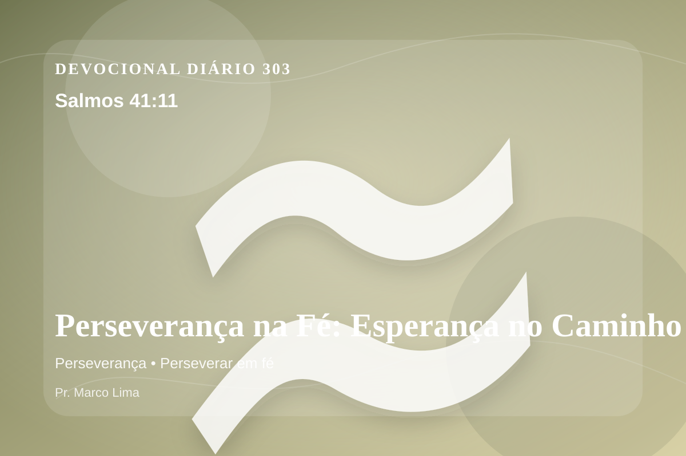

Perseverança na Fé: Esperança no Caminho (Salmos 41:11)
Por isto eu sei que tu te agradas de mim: porque meu inimigo não se declara vencedor sobre mim;
Pensamento
A mesma passagem pode tratar uma nova área do coração quando ouvimos Deus com humildade. Ao meditar em Salmos 41:11, não procure apenas conforto rápido; permita que Deus ensine, corrija, console e chame você para mais perto de Jesus.
Salmos 41:11 chama o coração a ouvir Deus com reverência e responder com fé prática. A Palavra não foi dada para enfeitar pensamentos religiosos, mas para conduzir pessoas reais ao Senhor.
O tema de perseverança precisa ser recebido com simplicidade e seriedade. A maturidade cristã começa quando a Palavra deixa de ser apenas inspiração e passa a governar escolhas. A perseverança é fé amadurecida no tempo da prova. A Escritura mostra que Deus não desperdiça sofrimento; Ele o usa para formar constância, humildade e esperança no coração dos Seus.
Talvez o maior desafio de hoje não seja entender o versículo, mas permitir que ele exponha o que precisa ser entregue. Deus cura com verdade, não com distração espiritual.
Arrependimento não é apenas sentir peso na consciência; é voltar-se para Deus, abandonar o caminho que entristece o Senhor e confiar que a graça de Cristo é suficiente para perdoar e transformar.
Este é o evangelho que sustenta toda aplicação: Jesus Cristo morreu pelos pecadores, ressuscitou em vitória e chama cada pessoa a responder com fé, arrependimento e uma vida rendida ao Seu senhorio.
A salvação não nasce do esforço humano, mas da graça de Deus em Jesus. Quem crê não precisa fingir força; pode se render, confessar e recomeçar.
Antes de terminar, ore com simplicidade: “Senhor, mostra onde preciso me arrepender e dá-me fé para obedecer”. Depois, pratique o que Deus já deixou claro.
Para Praticar Hoje
- Leia Salmos 41:11 lentamente e destaque uma palavra ou expressão central do texto.
- Confesse a Deus um pecado, resistência ou frieza espiritual que esta Palavra revelou.
- Declare sua fé em Jesus Cristo e pratique hoje uma atitude concreta de arrependimento e obediência.
Oração
Senhor, quando o caminho é longo, Salmos 41:11 me lembra de que o fim será maior que o começo. Dá-me perseverança para continuar, mesmo quando não vejo fruto. Faz essa verdade criar raízes em mim.
{kind=link}